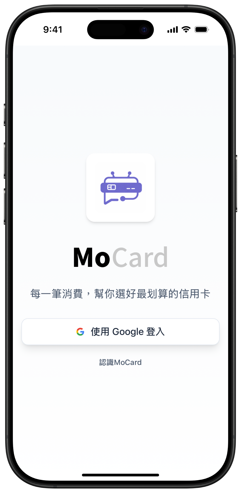
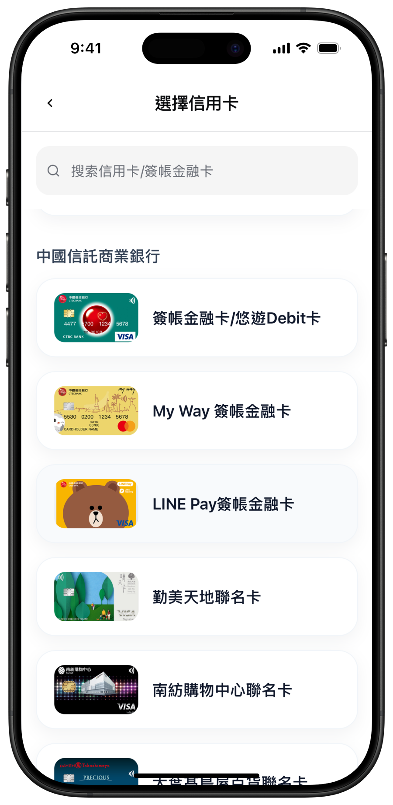
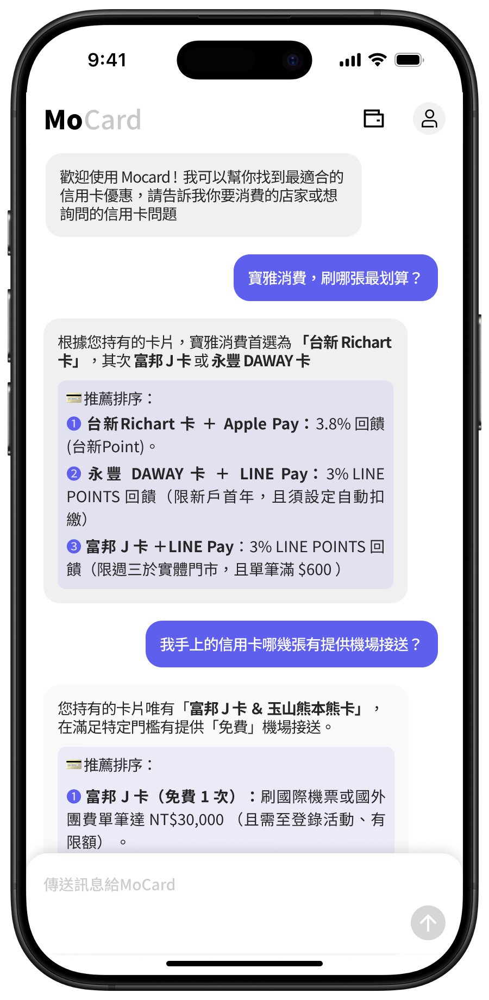

為何使用 MoCard
刷卡推薦一問就有
無論網購、實體店面、繳費，告訴 MoCard 你想刷什麼，馬上得到最佳卡片推薦。
回饋幫你拿到最多
根據你持有的卡片與消費情境，幫你算出可得的回饋，不錯過每一筆該拿的優惠。
信用卡問題都能問
年費、額度、分期規則、點數怎麼用……只要有疑問，直接問 MoCard 最快。
我們非常重視您的個資安全
您無須輸入敏感資訊，只須告訴我們你持有哪些信用卡。根據你的問題，MoCard 會為你推薦最佳信用卡，讓每一筆消費都能拿到最多回饋。
怎麼開始用?
1
快速登入
點擊「立即使用」，使用 Google 帳戶註冊。

2
選擇已持有的信用卡
告訴 MoCard 你有哪些卡。不需卡號、不需個資，只需選擇卡片名稱。

3
聊天獲得推薦
隨時問「這筆該刷哪張？」「這張卡有什麼優惠？」立刻得到答案。

用戶怎麼說
「用起來蠻直覺的，之前刷飯店算是用錯卡了，今天用這張有比我上次拿的回饋還高。」
「欸對，我就是傳說中有很多張卡的人，目前在網購體驗還不錯，推薦給大家！」
「不用給卡號很方便也比較安心，就消費回饋這件事，體感有比大型 AI 更懂我的感覺。」